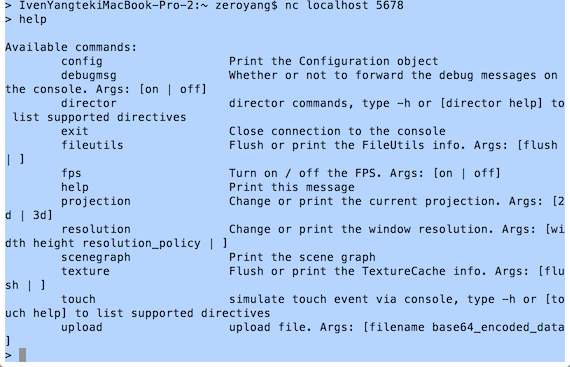
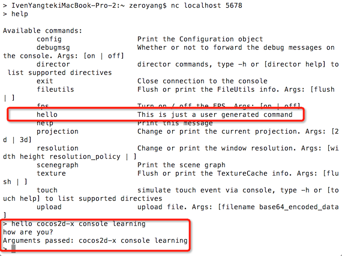

在Cocos2d-x 3.0 版新增了Console模块，可实现远程调试。在PC上连接5678端口，即可连接应用程序，输入对应的命令进行调试功能。目前已实现"fps on"、"fps off"、"scene graph"、"help"、"exit"等命令，开发者还可继承Console类添加自己的调试命令。
在设置主角的属性，无敌状态，制造物品，查看各种细节数据等等；这些复杂的游戏调试，使用Console，进行远程调试还是很必须。
下面我们来研究Console模块的使用
环境
搭建工程
setup.pycocos 脚本创建工程Example:
$ cd cocos2d-x
$ ./setup.py
$ source FILE_TO_SAVE_SYSTEM_VARIABLE
$ cocos new MyGame -p com.your_company.mygame -l cpp -d NEW_PROJECTS_DIR
$ cd NEW_PROJECTS_DIR/MyGame
按照上面操作执行
IvenYangtekiMacBook-Pro-2:Documents zeroyang$ cocos new ConsoleTest -p com.your_company.ConsoleTest -l cpp
Runing command: new
> Copy template into /Users/zeroyang/Documents/ConsoleTest
> Copying cocos2d-x files...
> Rename project name from 'HelloCpp' to 'ConsoleTest'
> Replace the project name from 'HelloCpp' to 'ConsoleTest'
> Replace the project package name from 'org.cocos2dx.hellocpp' to 'com.your_company.ConsoleTest'
IvenYangtekiMacBook-Pro-2:Documents zeroyang$ 我们创建了一个基于Cocos2d-x 3.0版本的ConsoleTest空工程。
类简介
Console 是一个让开发者通过 TCP 连接控制游戏的助手(helper)类.
Console将产生一个监听特定 TCP 端口的新线程.
Console有一个基本的命令解析器(token parser).每一条命令都会调用std::function<void(int)>.
如果std::function<>需要使用 Cocos2d API, 它需要调用
scheduler->performFunctionInCocosThread( ... );具体Console 相关API可以查看./cocos/base/CCConsole.h文件
使用Console只需加入一句代码就可以了：
Director::getInstance()->getConsole()->listenOnTCP(5678);端口号可以随意。
在HelloWorldScene.cpp的init方法加入下面代码：
Director::getInstance()->getConsole()->listenOnTCP(5678);编译运行ConsoleTest，打开一个Terminal，输入如下命令：
nc localhost 5678Cocos2d-x已经定义了很多命令，具体可以看help, 输入help，回车， PC控制台输入可用的远程控制命令如下：

试一试 fps on/off
> fps off你发现程序的 fps显示不见了
> fps on程序的fps重新显示。
其实是使用游戏控制台最重要的是自定义的控制台命令，比如 设置主角的属性，无敌状态，制造物品，查看各种细节数据等等；这些在调试复杂游戏的时候都是必须的，首先就是要先定义自己的控制台命令。 添加新命令当然也很简单：
在HelloWorldScene.cpp的init方法加入下面代码：
//自定义Console命令
static struct Console::Command commands[] = {
{"hello",//命令名称
"This is just a user generated command",//说明
/*
回调函数的第一个参数其实就是socket的句柄，使用send向client发送数据，
第2个参数是命令所带的参数字符串。
*/
[](int fd, const std::string& args) {
const char msg[] = "how are you?\nArguments passed: ";
send(fd, msg, sizeof(msg),0);
send(fd, args.c_str(), args.length(),0);
send(fd, "\n",1,0);
/*
如果回调函数中需要使用cocos2d的api就必须在
performFunctionInCocosThread函数中调用。
...
Director::getInstance()->getScheduler()->performFunctionInCocosThread([]{...});
...
*/
}},
};
Director::getInstance()->getConsole()->addCommand(commands[0]);
自定义命令 hello的使用 
你会发现，命令里面多了一条hello 指令。在PC控制台输入hello指令，执行如下:
> hello cocos2d-x console learning
how are you?
Arguments passed: cocos2d-x console learningCocos2d-x console learning 是hello指令的传递参数。
Console模块的使用就到此了。如果是运行ios或者android设备工程，把localhost改为相应设备的ip地址，要确保开发机和设备在同一内网。完整测试代码在此下载.